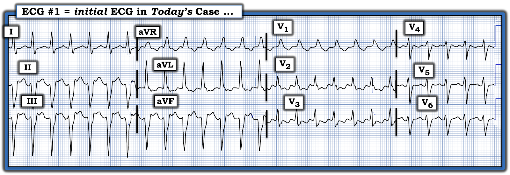
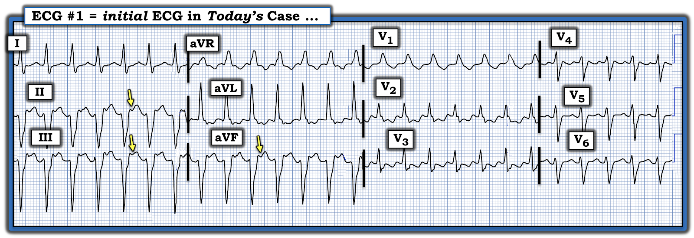
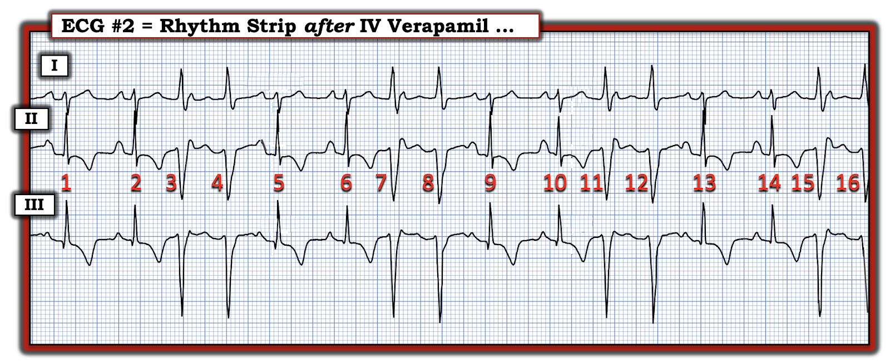
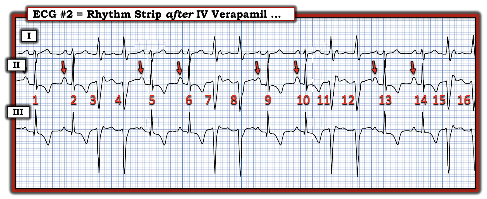
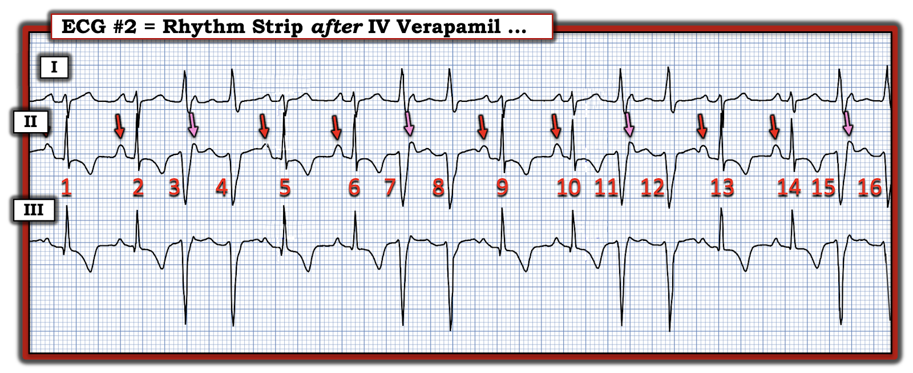
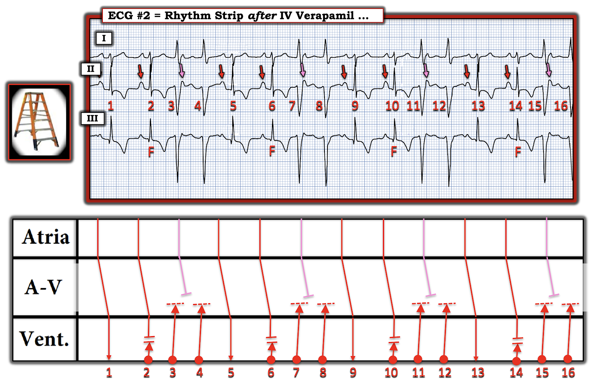
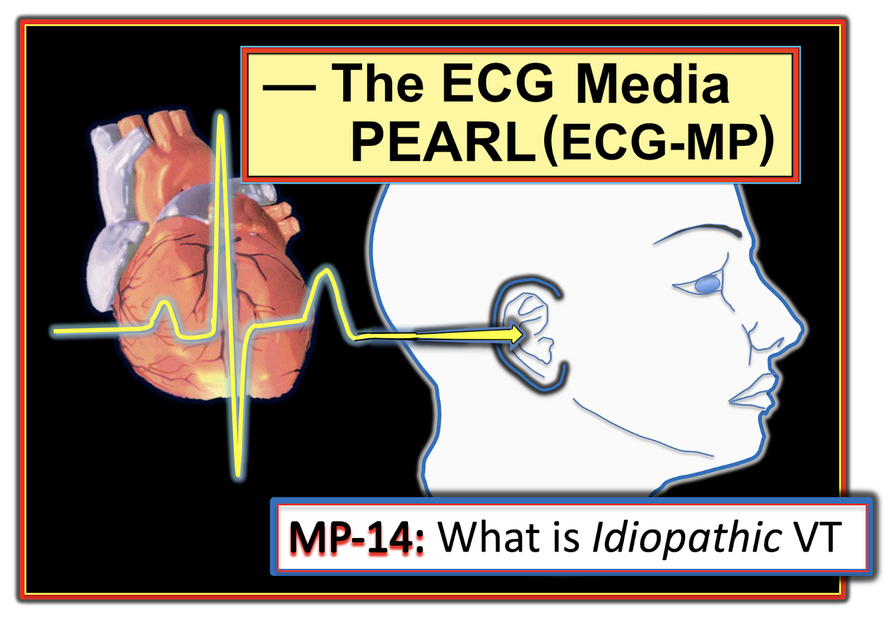

ECG Blog #464 — Vì sao tim giãn?
Điện tâm đồ ở Hình-1 được ghi từ một nam thiếu niên 15 tuổi trước đây khỏe mạnh — đến khám vì hồi hộp đánh trống ngực, chóng mặt và khó thở kéo dài 2 tuần. Bệnh nhân ổn định về huyết động tại thời điểm ghi bản ghi này.
CÂU HỎI:
Dựa trên bệnh sử nêu trên:
- BẠN sẽ đọc điện tâm đồ ở Hình-1 như thế nào?
- Bạn sẽ điều trị bệnh nhân ra sao?


SUY NGHĨ Ban đầu CỦA TÔI:
Vì bệnh nhân trong ca hôm nay ổn định về huyết động khi đang ở nhịp như trong Hình-1 — ít nhất chúng ta có chút thời gian để suy xét về nhịp này. Như mọi khi — tôi ưa dùng cách tiếp cận Ps, Qs, 3R (Xem ECG Blog #185).
- Nhịp là một nhịp nhanh QRS rộng (WCT) đều (Wide-Complex Tachycardia) tần số ~160-170/phút, không thấy rõ dấu hiệu sóng P xoang.
- QRS rộng 0.12 giây ở một số chuyển đạo.
- Nhìn kỹ các chuyển đạo dưới — có vẻ như có thể có sóng P ngược dòng (mũi tên VÀNG trong Hình-2).
CÂU HỎI:
- Việc chúng ta thấy sóng P ngược dòng trên điện tâm đồ ban đầu hôm nay có cho thấy có phân ly nhĩ thất không?
- Điều này có chứng minh nhịp là VT (nhịp nhanh thất — Ventricular Tachycardia) không?
- Chúng ta có nên chờ đợi gặp VT ở một thiếu niên 15 tuổi vốn khỏe mạnh không?


ĐIỂM THEN CHỐT (PEARL) #1: Hiện tượng gọi là phân ly nhĩ thất — được coi là xảy ra khi các sóng P "đúng lúc" không liên quan với các phức bộ QRS lân cận. Phân ly nhĩ thất có thể thoáng qua (chỉ xảy ra trong vỏn vẹn một nhát) — hoặc dai dẳng (như khi có blốc AV hoàn toàn). Giá trị chẩn đoán của việc nhận ra phân ly nhĩ thất trong một nhịp WCT — là nó gần như chứng minh nhịp đó là VT, vì nếu các sóng P "đúng lúc" không được dẫn truyền để tạo ra các phức bộ rộng xuất hiện đều đặn — thì các nhát rộng này phải phát sinh từ dưới nút AV (Xem ECG Blog #151 và Blog #133).
- Vấn đề là phần lớn các trường hợp khi đối mặt với một nhịp WCT chưa rõ căn nguyên — tần số của WCT sẽ quá nhanh để chúng ta có thể phát hiện đáng tin cậy các sóng P xoang nền. Vì vậy, bạn sẽ không thường thấy phân ly nhĩ thất trong các VT nhanh hơn (mà chính các VT nhanh hơn chứ không phải VT tần số chậm hơn — mới thách thức khả năng chẩn đoán của chúng ta).
- Theo kinh nghiệm của tôi — phân ly nhĩ thất bị chẩn đoán quá mức. Người ta có xu hướng nghĩ có phân ly nhĩ thất mỗi khi thấy "các sóng lệch thừa" trong một nhịp WCT. Thực tế lâm sàng là nhiễu (chứ không phải phân ly nhĩ thất thật) mới là nguyên nhân thường gặp của các sóng lệch này. Do đó — tôi thiên về chẩn đoán dè dặt phân ly nhĩ thất, trừ khi tôi thực sự "dò bước" bằng compa được các sóng P đều nằm bên dưới trong phần lớn (nếu không phải toàn bộ) bản ghi.
- Chúng ta không thấy phân ly nhĩ thất trong Hình-2. Thay vào đó — khoảng RP' vẫn không đổi (tức là, khoảng cách từ QRS đến mỗi sóng P ngược dòng không thay đổi). Cả VT lẫn các nhịp SVT vào lại (AVNRT và AVRT) đều có thể dẫn truyền ngược dòng. Do đó — việc thấy sóng P ngược dòng không giúp ích gì về chẩn đoán để phân biệt giữa nhịp VT và SVT.
Ca bệnh tiếp diễn:
Ban đầu, các nhân viên y tế cho rằng một thiếu niên vốn khỏe mạnh khó có khả năng đang ở trong VT.
- Đã thử xoa xoang cảnh — nhưng không thành công.
- 2 liều Adenosine không chuyển được nhịp.
- Lúc này — Verapamil (5 mg tĩnh mạch) đã được tiêm. Trong vài phút tiếp theo — nhịp WCT chậm dần, rồi chuyển về nhịp xoang bình thường.
Ngay sau khi tiêm Verapamil tĩnh mạch — nhịp trong Hình-3 được ghi lại.
- Bản ghi ở Hình-3 có giúp củng cố nhận định chẩn đoán của bạn về nhịp WCT hôm nay là gì không?


SUY NGHĨ CỦA TÔI về Hình-3:
"Tin tốt" khi nhìn dải nhịp 3 chuyển đạo ở Hình-3 — là nhịp WCT đang chậm lại — và giờ đây ít nhất đã thấy được từng lúc các sóng P xoang.
- Bạn có thể nhận ra bao nhiêu sóng P xoang?
TRẢ LỜI:
Trong Hình-4 — tôi đã đánh dấu bằng mũi tên ĐỎ các sóng P xoang thấy rõ trong Hình-3.
- Theo các mũi tên ĐỎ tôi thêm vào Hình-4 — các nhát #2 — #5,6 — #9,10 — và #13,14 đều có vẻ là các xung dẫn truyền từ xoang bình thường.
- Xen giữa các nhát xoang này là các cặp đôi thất (tức là, các nhát #3,4; 7,8; 11,12 và 15,16). Trong vài phút tiếp theo (khi Verapamil có thời gian phát huy tác dụng) — các cặp đôi thất này biến mất, và nhịp xoang bình thường được lập lại.
CÂU HỎI:
- Có thêm sóng P xoang nào không? (tức là, Nhiều sóng P xoang hơn số được đánh dấu trong Hình-4?).
Thử thách
Câu hỏi:
Tất cả các nhát dẫn truyền từ xoang trong Hình-4 có trông giống nhau không?
- GỢI Ý: Hãy nhìn kỹ ở chuyển đạo III ...


ĐIỂM THEN CHỐT (PEARL) #2: Cách dễ nhất (và nhanh nhất) để tìm các sóng P bổ sung đang "ẩn nấp" trong Hình-4 — là dùng compa đo (calipers).
- Thay vì chỉ có các sóng P xoang từng lúc được đánh dấu bằng mũi tên ĐỎ trong Hình-4 — Chẳng phải hợp lý hơn nếu nhịp sóng P nền là đều sao?
- Nếu đúng như vậy — thì khoảng P-P gợi ý bởi khoảng cách ngắn hơn giữa 2 mũi tên ĐỎ bất kỳ có lẽ sẽ tiếp diễn suốt toàn bộ bản ghi.
Tôi minh họa việc áp dụng khái niệm này trong Hình-5.
- Mũi tên HỒNG đánh dấu các sóng P xoang đúng lúc bị che khuất một phần, tiếp diễn suốt toàn bộ dải nhịp này.
ĐIỂM THEN CHỐT (PEARL) #3: Bằng cách "dò bước" các sóng P xoang đúng lúc, đều đặn, suốt toàn bộ dải nhịp ở Hình-5 — chúng ta đã xác lập rằng giờ đây có ít nhất phân ly nhĩ thất thoáng qua (vì các mũi tên màu trong Hình-5 cho thấy giờ đây có một nhịp xoang nền đều — và các sóng P đúng lúc ở mũi tên HỒNG không liên quan đến các nhát QRS rộng).
- Việc chứng minh có phân ly nhĩ thất trong Hình-5 chứng tỏ rằng các nhát #3,4; 7,8; 11,12; và 15,16 có nguồn gốc thất. Và việc hình dạng QRS ở các chuyển đạo I,II,III trên điện tâm đồ ban đầu hôm nay (tức là, từ Hình-1) gần như giống hệt hình dạng QRS của các nhát thất này trong Hình-5 — càng cung cấp thêm bằng chứng rằng điện tâm đồ ban đầu hôm nay là VT!


TRẢ LỜI cho Câu hỏi Thử thách:
Hãy XEM LẠI chuyển đạo III trong Hình-5. Chẳng phải phức bộ QRS của nhát dẫn truyền từ xoang thứ 2 trong mỗi nhóm hơi nhỏ hơn một chút so với nhát dẫn truyền từ xoang thứ 1 sao?
- Câu trả lời là QRS của các nhát dẫn truyền từ xoang #2,6,10 và 14 quả thực hơi nhỏ hơn QRS của các nhát #1,5,9,13.
- Đó là vì các nhát #2,6,10,14 là nhát hỗn hợp! Có sự rút ngắn tinh tế nhưng có thật của khoảng PR trước các nhát #2,6,10,14 so với khoảng PR trước các nhát #1,5,9,13 (thấy rõ nhất ở chuyển đạo I và II). Điều này tạo khả năng để các nhát #1,5,9,13 dẫn truyền được một phần đường qua tâm thất — cho đến khi chúng gặp mặt sóng khử cực khởi phát bởi một nhát thất xảy ra gần như đồng thời.
ĐIỂM THEN CHỐT (PEARL) #4:
Ý nghĩa lâm sàng của việc tìm thấy nhát hỗn hợp trong một nhịp WCT vốn đều — là cũng giống như phân ly nhĩ thất, điều này chứng minh nhịp đó là VT.
- Cơ chế của nhát hỗn hợp trong Hình-5 được minh họa rõ nhất bằng giản đồ bậc thang (laddergram) vẽ ở Hình-6. Cần nhớ rằng chỉ ít phút trước khi ghi nhịp này — bệnh nhân đang ở trong một WCT bền bỉ. Verapamil tĩnh mạch hiện đang trong quá trình chuyển nhịp về nhịp xoang.
- Nhìn vào Tầng Thất trong giản đồ bậc thang — Thay vì nhịp WCT dai dẳng (vốn có mặt ít phút trước đó) — giờ đây chỉ còn các loạt gồm 3 nhát thất liên tiếp (các nhát #2,3,4; 6,7,8; 10,11,12; và 14,15,16). Các loạt này bị ngắt quãng theo chu kỳ bởi các nhát bắt được ( = các sóng P xoang đúng lúc xảy ra vào đúng thời điểm để có thể dẫn truyền các nhát #1; 5; 9; và 13 xuống tâm thất).
- Ngược lại — các sóng P ở mũi tên HỒNG trong Hình-6 rơi vào thời kỳ trơ tuyệt đối — và do đó không thể dẫn truyền xuống tâm thất.
- Còn lại các sóng P trước các nhát #2,6,10 và 14 — có thể dẫn truyền vào tâm thất (ít nhất là cho đến thời điểm chúng gặp các xung thất xảy ra gần như đồng thời). Kết quả là nhát hỗn hợp. (Để biết thêm về khái niệm nhát hỗn hợp — Xem ECG Blog #128 và Blog #129).


=============================
Ca bệnh hôm nay tiếp diễn:
Ngay sau khi Verapamil tĩnh mạch lập lại nhịp xoang — bệnh nhân được làm siêu âm tim:
- Siêu âm tim cho thấy giãn cả 4 buồng tim kèm giảm co bóp toàn bộ = DCM (bệnh cơ tim giãn — Dilated CardioMyopathy).
CÂU HỎI:
- Các kết quả siêu âm tim này có làm thay đổi nhận định của bạn về trình tự các sự kiện trong ca hôm nay không?
- Tại sao một thiếu niên 15 tuổi trước đây khỏe mạnh lại mắc DCM với phân suất tống máu giảm nặng?
- Liệu bệnh nhân có thể đã bị nhiễm virus với tổn thương tim tương đối thầm lặng (tức là, viêm cơ tim)? Nếu vậy — Liệu viêm cơ tim có thể là nguyên nhân gây VT ở bệnh nhân này?
- HOẶC — Liệu có phải bệnh nhân này đã có những cơn VT bền bỉ thường xuyên và kéo dài trong khoảng 2 tuần mà em kể là có triệu chứng, với hậu quả cuối cùng là các cơn nhịp nhanh kéo dài đã gây ra bệnh cơ tim?
=============================
ĐIỂM THEN CHỐT (PEARL) #5: Hãy lưu ý đến bệnh cơ tim do nhịp nhanh - TiCM (Tachycardia-induced CardioMyopathy)
Dù chưa có câu trả lời dứt khoát cho các câu hỏi trên — kịch bản khả dĩ nhất (khi thiếu niên 15 tuổi này trước đây khỏe mạnh) — là các cơn nhịp nhanh bền bỉ đã thúc đẩy sự hình thành TiCM (Huizar, Ellenbogen và cs. — JACC 73(18):2328-2344, 2019 — và — Kim và cs. — Korean Circ J. 49(9):808-817, 2019).
- TiCM — được định nghĩa là sự hiện diện của một dạng rối loạn chức năng thất trái có thể hồi phục, chỉ do tăng tần số thất từ bất kỳ loại nhịp nhanh thường xuyên hoặc bền bỉ nào (rung nhĩ đáp ứng thất nhanh là nhịp khởi phát thường gặp nhất — nhưng TiCM cũng đã được chứng minh là có thể phát sinh từ cuồng nhĩ, các nhịp SVT vào lại, nhịp nhanh nhĩ (ATach), PVC thường xuyên, các cơn VT).
- Nguy cơ mắc TiCM không chỉ phụ thuộc vào loại nhịp nhanh — mà còn vào thời gian kéo dài và tần số của nhịp nhanh.
- Thời gian cần để hình thành TiCM thay đổi — có thể ngắn chỉ 3 ngày so với các cơn nhịp nhanh dai dẳng trong nhiều tháng (tức là, Bệnh sử 2 tuần có triệu chứng trong ca hôm nay là đủ thời gian để TiCM hình thành).
- Cơ chế hình thành TiCM chưa rõ (phóng thích epinephrine dai dẳng; rối loạn điều hòa calci nội bào?).
- Có thể gặp nhiều mức độ triệu chứng. Thường gặp nhất bệnh nhân than phiền hồi hộp đánh trống ngực — nhưng có thể có khó thở, chóng mặt và/hoặc mệt mỏi. Đáng ngạc nhiên là một tỉ lệ đáng kể bệnh nhân không có triệu chứng — TiCM chỉ được phát hiện khi siêu âm tim cho thấy chức năng tim giảm ngoài dự kiến. Có thể xuất hiện suy tim.
- Các dấu hiệu siêu âm tim điển hình gồm các buồng tim giãn kèm rối loạn chức năng tâm thu hai thất mức độ vừa đến nặng. Bề dày vách liên thất và thành thất trái không tăng (tức là, không có LVH). Có thể thấy hở van hai lá thứ phát.
- "Tin tốt" — là chức năng thất trái thường cải thiện, và thậm chí có thể trở về bình thường NẾU kiểm soát được nhịp nhanh. Các lựa chọn điều trị gồm thuốc chẹn ß, các thuốc chống loạn nhịp khác, RFCA (triệt đốt qua ống thông bằng năng lượng sóng có tần số radio — RadioFrequency Catheter Ablation). Khi điều trị thành công — chức năng thất trái có thể bắt đầu hồi phục trong vòng vài tuần. Những bệnh nhân hồi phục thường hồi phục trong vòng 6 tháng sau khi đạt được kiểm soát tần số.
- Điều cốt lõi: Có thể cực kỳ khó xác định liệu hình ảnh DCM trên siêu âm tim là nguyên nhân hay hậu quả của một nhịp nhanh tái phát.
=============================
Quay lại điện tâm đồ Ban đầu:
Hãy XEM LẠI điện tâm đồ ban đầu của ca hôm nay — mà tôi trình bày lại ở Hình-7.
- CÂU HỎI: Có manh mối nào cho thấy WCT đều này là VT không?
SUY NGHĨ CỦA TÔI về Hình-7:
Nhiều bác sĩ lâm sàng có một ấn tượng sai lầm rằng người trẻ tuổi hoặc thiếu niên vốn khỏe mạnh không bị VT.
- Quả đúng là — VT do thiếu máu cục bộ nói chung không gặp khi không có bệnh tim nền.
- Tuy nhiên — khoảng 10% tất cả các nhịp VT là VT vô căn, tức VT xảy ra ở bệnh nhân không có bệnh tim cấu trúc nền.
- VT phân nhánh (fascicular VT) — là một trong những dạng VT vô căn thường gặp nhất. Nó được đặt tên như vậy vì khởi phát từ một trong các phân nhánh của thất. Do đó — hình dạng QRS trong VT phân nhánh thường giống hoặc RBBB/LAHB hoặc RBBB/LPHB.
ĐIỂM THEN CHỐT (PEARL) #6:
Việc nhận ra VT phân nhánh sẽ dễ hơn nhờ: i) Nhận thức rằng dạng VT này phổ biến hơn nhiều so với người ta thường nghĩ, đặc biệt khi bệnh nhân là thiếu niên hoặc người trẻ vốn khỏe mạnh, không có bệnh tim đã biết; — và, ii) Nhận ra rằng VT phân nhánh càng có khả năng hơn ở những bệnh nhân như vậy khi hình dạng QRS giống nhưng không hoàn toàn điển hình cho một trong các dạng blốc hai phân nhánh.
- Điện tâm đồ hôm nay cho thấy một nhịp WCT đều tần số ~160-170/phút, không thấy rõ dấu hiệu sóng P xoang. (Như đã bàn ở trên — có thể có dẫn truyền thất-nhĩ (VA) ngược dòng 1:1 trên điện tâm đồ ban đầu — nhưng điều này không giúp ích cho chẩn đoán phân biệt).
- Hình dạng QRS trong Hình-7 thoạt nhìn giống dẫn truyền kiểu RBBB/LAHB nhưng: i) Phức bộ QRS ở V1 không có hình dạng rõ ràng. Nó thiếu cấu hình ba pha điển hình (rSR' với "tai thỏ" phải cao hơn) vốn rất hay gặp ở người trẻ vốn khỏe mạnh; — và, ii) Phần lớn các trường hợp có dẫn truyền kiểu LAHB ở người trẻ vốn khỏe mạnh — sẽ có sóng r khởi đầu rõ hơn và QRS không giãn rộng nhiều như vậy ở các chuyển đạo dưới.
- Xin nhấn mạnh: Dù tôi không chắc chắn 100% — khi nhìn điện tâm đồ ban đầu của ca hôm nay, tôi rất nghi ngờ rằng những đặc điểm không điển hình nêu trên của hình dạng QRS khiến khả năng Hình-7 là VT phân nhánh (từ phân nhánh trái sau) cao hơn nhiều so với không phải.
- Khi thấy bản ghi này ở một thiếu niên 15 tuổi trước đây khỏe mạnh — điều trị ban đầu của tôi sẽ là Verapamil tĩnh mạch, thuốc được lựa chọn cho VT phân nhánh (và thường cũng sẽ hiệu quả nếu nhịp là SVT vào lại có dẫn truyền lệch hướng thay vì VT).
- Xét mức độ nặng của triệu chứng ở bệnh nhân này (với hậu quả là hình thành TiCM) — điều trị tối ưu sau khi chuyển nhịp WCT sẽ là chuyển tới chuyên khoa điện sinh lý (EP) để triệt đốt. Hy vọng — chức năng thất trái sẽ trở về bình thường sau khi kiểm soát được nhịp.
==========================================
Lời cảm ơn: Xin cảm ơn Fardeen Baray (đến từ Kabul, Afghanistan) đã chia sẻ ca bệnh và bản ghi này.
==========================================

==============================
PHẦN BỔ SUNG (ngày 11 tháng 1 năm 2025):
Tôi tóm tắt các đặc điểm CHÍNH về VT vô căn trong Hình-8.



ECG Media PEARL #14 (8 phút âm thanh):
— VT vô căn là gì? — TẠI SAO chúng ta cần quan tâm?
Đặc biệt chú ý đến 2 dạng thường gặp nhất = VT RVOT (đường ra thất phải — Right Ventricular Outflow Track) và VT phân nhánh.
==============================
Các bài ECG Blog liên quan khác đến ca hôm nay:
- ECG Blog #185 — Ôn lại cách đọc nhịp có hệ thống, dùng cách tiếp cận Ps, Qs & 3R.
- ECG Blog #210 — Ôn lại phương pháp Cách-Một-Nhát (hoặc Cứ-Mỗi-Ba-Nhát) để ước tính tần số tim nhanh — và bàn về một ca khác có nhịp WCT đều.
- ECG Blog #220 — Ôn lại cách tiếp cận WCT đều (nhịp nhanh QRS rộng — Wide-Complex Tachycardia).
- ECG Blog #196 — Một ca khác có nhịp WCT đều.
- ECG Blog #204 — Ôn lại chẩn đoán điện tâm đồ các blốc nhánh (RBBB/LBBB/IVCD).
- ECG Blog #203 — Ôn lại chẩn đoán điện tâm đồ về trục và các blốc phân nhánh. Để ôn lại hình dạng QRS trong các blốc hai phân nhánh (RBBB/LAHB; RBBB/LPHB) — Xem phần Video Pearl trong bài này.
- ECG Blog #211 — TẠI SAO xảy ra dẫn truyền lệch hướng?
- ECG Blog #197 — và Blog #323 — ôn lại VT phân nhánh.
- ECG Blog #301 — Ôn lại một WCT có nguồn gốc trên thất! (với RẤT NHIỀU nội dung về dẫn truyền lệch hướng).
- ECG Blog #38 và Blog #85 — Ôn lại VT phân nhánh.
- ECG Blog #278 — Một ca khác có nhịp WCT đều ở một người trẻ tuổi.
- ECG Blog #35 — Ôn lại VT RVOT.
- ECG Blog #42 — Ôn lại toàn diện các tiêu chuẩn phân biệt VT với dẫn truyền lệch hướng.